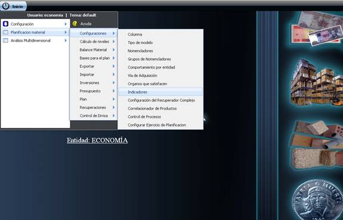
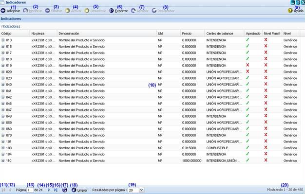
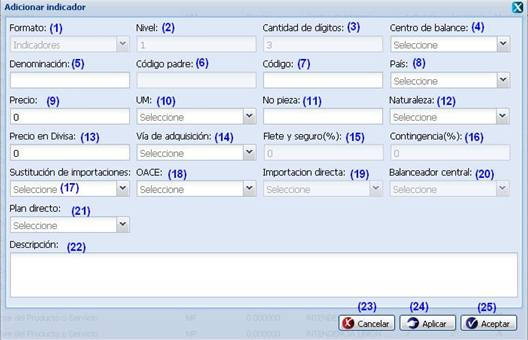
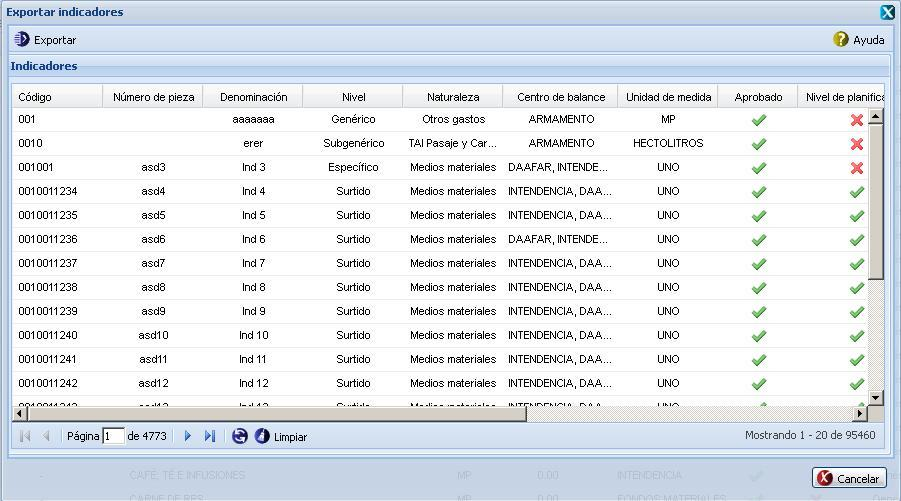
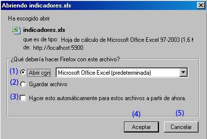
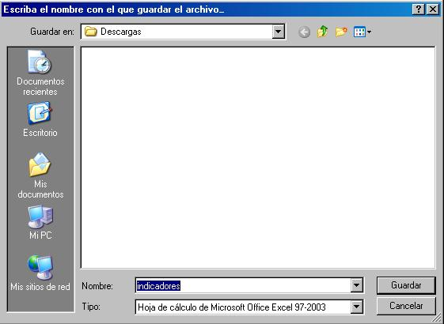
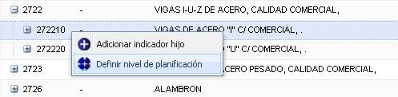
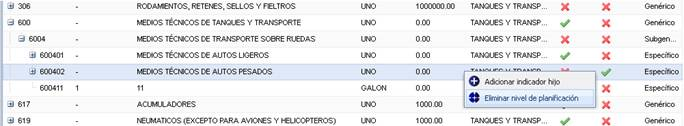
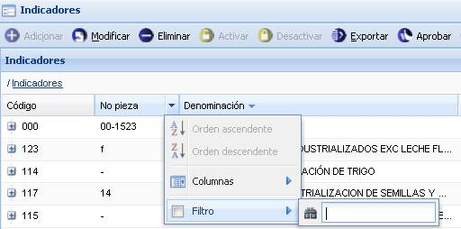

--Indicadores--
En esta funcionalidad se gestionan los indicadores los cuales constituyen una pieza fundamental en la planificación. Para acceder a esta funcionalidad se selecciona la opción Inicio\Planificación material\Configuraciones\Indicadores del menú que se muestra para el módulo Configuraciones, ver figura 1.

Figura 1. Acceso a la funcionalidad de Indicadores.
Una vez seleccionada la funcionalidad, aparecerá en pantalla la interfaz de la misma, donde el usuario autenticado podrá realizar las acciones que desee, en correspondencia con el acceso que tenga definido. Al acceder a la interfaz de Indicadores, el sistema le mostrará un listado con todos los indicadores que han sido registrados en el sistema hasta el momento. Ver figura 2.

Figura 2. Interfaz y acciones de la funcionalidad Indicadores.
Las diferentes opciones que conforman la figura anterior permiten:
- Adicionar indicador, ver Adicionar indicador, esta acción permite adicionar indicadores, cuando se presione el botón Aceptar o Aplicar de la interfaz el sistema mostrará un mensaje de información notificando que se adicionó el indicador. Se puede acceder a esta funcionalidad con las teclas (Alt + I).
- Modificar un indicador previamente seleccionado en el listado. Una vez seleccionado el indicador y presionada la opción Modificar de la interfaz, el sistema le mostrará una interfaz con los datos cargados del mismo, posibilitando de esta forma que se modifiquen los datos que se requieran. Se puede acceder a esta funcionalidad seleccionando el indicador y oprimiendo las teclas (Alt + M). Si al modificar el indicador se introduce uno que ya existe, el sistema mostrará un mensaje de error. La validación de cada uno de los campos de la interfaz será muy similar al descrito en el Adicionar indicador. Para ejecutar esta acción es importante tener en cuenta las siguientes precondiciones y validaciones:
Precondiciones:
- Se debe registrar al menos un indicador en el sistema.
- El indicador debe de estar en estado Desaprobado.
Validaciones:
- Si el usuario autenticado es un órgano rector puede modificar los indicadores en los 4 niveles, de lo contrario en el 3er y 4to nivel solamente.
- La opción Modificar saldrá deshabilitada y se habilitará cuando se seleccione un indicador desaprobado de la lista de indicadores.
- Eliminar indicador previamente seleccionado en el listado. Esta acción permite eliminar el(los) indicador(es) deseado(s), una vez seleccionado(s) se procede a seleccionar la opción Eliminar de la interfaz, automáticamente se mostrará un mensaje de confirmación, que se puede Aceptar o Cancelar según sea el caso, de presionar la opción Aceptar el sistema le mostrará un mensaje de información sobre el éxito de la operación realizada, quedando eliminado(s) el(los) indicador(es) seleccionado(s), si cancela el mensaje de confirmación, el sistema permanece en la interfaz principal y no elimina el(los) indicador(es). Se puede realizar esta operación seleccionando el(los) indicador(es) en el listado y oprimiendo la tecla (Delete). Para ejecutar esta acción, es importante tener en cuenta las siguientes precondiciones y validaciones:
Precondiciones:
- Se debe registrar al menos un indicador en el sistema.
- El indicador debe de estar en estado Desaprobado.
Validaciones:
- La opción Eliminar se habilitará cuando se seleccione un indicador de la lista.
- El indicador o uno de sus hijos no puede estar siendo usado en al menos un modelo. Si el indicador o uno de sus hijos está siendo usado en al menos un modelo, el sistema le mostrará un mensaje de error.
- Si se intenta eliminar un indicador que está aprobado el sistema le mostrará un mensaje de error.
- Activar un indicador previamente seleccionado en el listado. Esta acción permite activar el(los) indicador(es) deseado(s), una vez seleccionado(s) se procede a seleccionar la opción Activar de la interfaz, automáticamente el sistema le mostrará un mensaje de confirmación, que se puede Aceptar o Cancelar según sea el caso, de presionar la opción Aceptar el sistema le mostrará un mensaje de información sobre el éxito de la operación realizada, quedando activado(s) el(los) indicador(es) seleccionado(s), si cancela el mensaje de confirmación, el sistema permanece en la interfaz principal y no se activa(n) el(los) indicador(es). Se puede acceder a esta operación seleccionando el(los) indicador(es) en el listado y oprimiendo la tecla (Alt + X). Para ejecutar esta acción, es importante tener en cuenta las siguientes precondiciones y validaciones:
Precondiciones:
- Se debe registrar al menos un indicador en el sistema.
- El estado del indicador debe de ser Desactivado.
- El indicador debe estar Aprobado.
Validaciones:
- Si selecciona la opción activar de la interfaz y el indicador se encuentra desaprobado, el sistema le mostrará un mensaje de información.
- Desactivar un indicador previamente seleccionado en el listado. Esta acción permite desactivar el(los) indicador(es) deseado(s), una vez seleccionado(s) se procede a seleccionar la opción Desactivar de la interfaz, automáticamente el sistema le mostrará un mensaje de confirmación, que se puede Aceptar o Cancelar según sea el caso, de presionar la opción Aceptar el sistema le mostrará un mensaje de información sobre el éxito de la operación realizada, quedando desactivado(s) el(los) indicador(es) seleccionado(s), si cancela el mensaje de confirmación, el sistema permanece en la interfaz principal y no se desactivará(n) el(los) indicador(es). Se puede realizar esta operación seleccionando el indicador en el listado y oprimiendo la tecla (Alt + F). Para ejecutar esta acción, es importante tener en cuenta las siguientes precondiciones y validaciones:
Precondiciones:
- Se debe registrar al menos un indicador en el sistema.
- El estado del indicador debe de ser Activado.
Validaciones:
- El botón Desactivar se habilita si el(los) indicador(es) seleccionado(s) están activados.
- Exportar, ver Exportar, esta acción permite exportar una lista de indicadores.
- Aprobar un indicador previamente seleccionado. Esta acción permite aprobar el(los) indicador(es) deseado(s), una vez seleccionado(s) se procede a seleccionar la opción Aprobar de la interfaz, automáticamente el sistema le mostrará un mensaje de confirmación, que se puede Aceptar o Cancelar según sea el caso, de presionar la opción Aceptar el sistema le mostrará un mensaje de información sobre el éxito de la operación realizada, quedando aprobado(s) el(los) indicador(es) seleccionado(s), si cancela el mensaje de confirmación, el sistema permanece en la interfaz principal y no se aprobará(n) el(los) indicador(es). Se puede realizar esta operación seleccionando el tipo de modelo en el listado y oprimiendo la tecla (Alt + Q). Para ejecutar esta acción, es importante tener en cuenta las siguientes precondiciones y validaciones:
Precondiciones:
- Se debe registrar al menos un indicador en el sistema.
- El estado del indicador debe ser Desaprobado.
Validaciones:
- El botón Aprobar se activa si el(los) indicador(es) seleccionado(s) están en estado desaprobado, y una vez aprobado un indicador, este pasa automáticamente para estado Activado.
- Desaprobar un indicador previamente seleccionado. Esta acción permite desaprobar el(los) indicador(es) deseado(s), una vez seleccionado(s) se procede a seleccionar la opción Desaprobar de la interfaz, automáticamente el sistema le mostrará un mensaje de confirmación, que se puede Aceptar o Cancelar según sea el caso, de presionar la opción Aceptar el sistema le mostrará un mensaje de información sobre el éxito de la operación realizada, quedando desaprobado(s) el(los) indicador(es) seleccionado(s), si cancela el mensaje de confirmación, el sistema permanece en la interfaz principal y no se desaprobará(n) el(los) indicador(es). Se puede realizar esta operación seleccionando el tipo de modelo en el listado y oprimiendo la tecla (Alt + W). Para ejecutar esta acción, es importante tener en cuenta las siguientes precondiciones y validaciones:
Precondiciones:
- Se debe registrar al menos un indicador en el sistema.
- El estado del indicador debe de ser Aprobado.
Validaciones:
- El botón Desaprobar se activa si el(los) indicador(es) seleccionado(s) están en estado aprobado.
- Si se desaprueba un indicador activo el indicador pasa automáticamente de activado a desactivado.
- Mostrar ayuda de la funcionalidad. Se puede realizar esta operación seleccionando la combinación de teclas (Alt + H).
- Se muestra el listado de indicadores.
- Ir a la primera página, mostrando los primeros indicadores.
- Ir a la primera página anterior.
- Muestra el número de la página donde se encuentra, se puede introducir el número.
- Muestra el número máximo de páginas.
- Ir a la siguiente página.
- Ir a la ultima página.
- Actualizar el listado de indicadores.
- Limpiar filtro(s). Esta acción limpiará todos los criterios de búsqueda, deshabilitando los filtros realizados. Se puede realizar esta operación seleccionando la combinación de teclas (Alt + L).
- Se muestra la cantidad de resultados a mostrar por página.
- Mostrar la cantidad de resultados encontrados.
Adicionar indicadores 
Lo primero que hay que tener en cuenta para adicionar un nuevo indicador en el sistema es saber si el indicador que se va a adicionar es un indicador Genérico, Subgenérico, Específico o Surtido. A continuación se especificará en estos casos.
Adicionar indicador Genérico
Esta funcionalidad solo la puede ejecutar la entidad que funja como Órgano Rector y como Centro de Balance. Se presiona el botón Adicionar de la interfaz, ver Figura 2. Inmediatamente aparecerá una ventana donde se podrán especificar los datos relacionados con el indicador que se desea adicionar, ver Figura 3.

Figura 3. Interfaz Adicionar indicador.
Las opciones de la Figura anterior permiten:
- Mostrar el formato del indicador a adicionar. Este campo no es modificable.
- Mostrar el Nivel del indicador a adicionar. Este campo no es modificable.
- Mostrar la cantidad de dígitos del indicador a adicionar. Este campo no es modificable.
- Seleccionar el centro de balance al que pertenecerá el indicador.
- Introducir la denominación del indicador que desea insertar.
- Introducir el código padre del indicador que desea insertar.
- Introducir el código del indicador que desea insertar.
- Seleccionar el país.
- Introducir el precio del indicador que desea insertar.
- Seleccionar la unidad de medida.
- Introducir el número de pieza del indicador que desea insertar.
- Seleccionar la naturaleza del indicador.
- Introducir el precio en divisa.
- Seleccionar la vía de adquisición.
- Introducir el flete y seguro del indicador. Este campo solo se habilitará una vez seleccionada la vía de adquisición “Importación directa”.
- Introducir la contingencia del indicador. Este campo solo se habilitará una vez seleccionada la vía de adquisición “Importación directa”.
- Introducir la sustitución de importaciones. Este campo solo se habilitará una vez seleccionada la vía de adquisición “Sustitución de importaciones”.
- Introducir la OACE. Este campo solo se habilitará una vez seleccionada la vía de adquisición “OACE”.
- Introducir la importación directa. Este campo solo se habilitará una vez seleccionada la vía de adquisición “Importación directa”.
- Seleccionar el balanceador central.
- Seleccionar el plan directo.
- Introducir una breve descripción del indicador a insertar. Este dato no es obligatorio.
- Cancelar las acciones y salir de la interfaz sin guardar los datos.
- Guardar los datos y limpiar los campos de la interfaz, permitiendo adicionar otro indicador.
- Adicionar los datos del indicador al listado y cerrar la interfaz.
Validaciones:
- Todos los campos de la interfaz Adicionar Indicador son obligatorios excepto los campos Precio, No pieza, Precio en divisa, Plan directo y Descripción, en caso de dejar campos vacíos el sistema debe mostrar un mensaje en el mismo campo.
- El campo Código solo acepta números de 3 dígitos para el 1er nivel. Esta cantidad de dígitos se especifica en el campo Cantidad de dígitos, si no cumple con la cantidad establecida se debe mostrar un mensaje de error en el mismo campo. Si se adiciona un código ya existente se debe mostrar un mensaje de error.
- El campo Denominación acepta caracteres alfa-numéricos y los caracteres especiales hasta 255 caracteres si se introduce algún carácter especial se debe mostrar un mensaje de error en el mismo campo, si sobrepasa la cantidad establecida se debe un mensaje de error en el mismo campo.
- El campo Descripción acepta caracteres alfa-numéricos y caracteres especiales sin límites, puede ser vacío.
- El campo Precio acepta números y el carácter especial (.) hasta 19 dígitos, si se introduce letras o algún otro carácter especial el sistema los limpia, si sobrepasa la cantidad establecida el sistema mostrará un mensaje de error en el mismo campo.
- El campo Precio en Divisa acepta números y el carácter especial (.) hasta 19 dígitos, si se introduce letras o algún otro carácter especial el sistema los limpia, si sobrepasa la cantidad establecida se debe mostrar un mensaje de error en el mismo campo.
- El campo No pieza acepta letras, números y los caracteres especiales (_), (-), (“), (‘) y (/) de lo contrario debe mostrar un mensaje de error en el mismo campo. Acepta hasta 255 caracteres, si sobrepasa la cantidad establecida se debe mostrar un mensaje de error en el mismo campo.
- El campo Vía de adquisición contiene una lista de cuatro opciones, si se selecciona la opción sustitución de importaciones el sistema activa el campo Sustitución de importaciones, si se selecciona la opción OACE el sistema activa el campo OACE, si se selecciona la opción importación directa el sistema activa los campos Flete y seguro (%) y Contingencia, si se selecciona la opción balanceador central el sistema activa los campos Balanceador central.
- Las opciones sustitución de importaciones, OACE e importación directa pueden ser seleccionadas al mismo tiempo y el sistema activara los campos relacionadas con estas opciones como se explicó anteriormente, pero si selecciona la opción balanceador central entonces no podrá seleccionar ninguna otra opción.
- La suma de los campos “Flete y seguro (%)” y “Contingencia” debe ser menor que 100.
Adicionar indicador Subgenérico, Específico o Surtido
Para adicionar un indicador en uno de estos niveles, debe seleccionar un indicador de la interfaz Indicadores, ver figura 2 y presionar clic secundario (derecho) encima del mismo, seleccionando así la opción Adicionar indicador hijo, posteriormente se mostrará la interfaz “Adicionar indicador”, ver figura 3. Es válido aclarar que para adicionar un indicador Específico o Surtido se debe desplegar el árbol de indicadores hasta el nivel deseado, de igual forma los indicadores Subgenérico solo podrán ser adicionados por la entidad que funja como Órgano Rector.
Una vez mostrada la interfaz “Adicionar indicador”, ver figura 3, el conjunto de pasos a seguir es igual al descrito en el epígrafe Adicionar indicador Genérico.
Exportar listado de indicadores
Esta funcionalidad le permitirá exportar un listado de indicadores que hasta el momento será solo en formato de Microsoft Office Excel (.xls). Para acceder a la funcionalidad debe optar por la opción Exportar que se encuentra en la barra de acciones de la interfaz principal, ver Figura 2. Seguidamente se le mostrará la interfaz Exportar indicadores, ver figura 4.

Figura 4. Interfaz Exportar indicadores.
Se procede a seleccionar el botón Exportar presente en la barra de acciones de la interfaz, ver figura 4. Seguidamente el Sistema le mostrará una ventana con las opciones de Guardar o Abrir el documento que será exportado, ver figura 5.

Figura 5. Ventana de soporte a la funcionalidad Exportar.
Las diferentes opciones que conforman la figura anterior permiten:
- Abrir un documento con los indicadores.
- Seleccionar formato en que desea guardar o visualizar el documento.
- Guardar archivo en la carpeta deseada. De seleccionarla se mostrará una ventana para seleccionar la ubicación y el nombre del fichero, es importante destacar que el nombre del fichero será “indicadores” por defecto, ver figura 6.
- Ejecutar las opciones 1 o 2 sin mostrar la ventana cada vez que se invoque a la funcionalidad.
- Cancelar las acciones y salir de la interfaz sin realizar ninguna operación.
- Ejecutar la acción según la opción seleccionada.

Figura 6. Ventana para seleccionar la ubicación del fichero.
Definir nivel de planificación
Esta funcionalidad le permite decir que el indicador puede ser planificable y debe tener en cuenta que:
- Para definir el nivel de planificación el indicador no debe estar en estado de aprobación (Aprobado).
- En una misma rama solo puede existir un nivel de planificación, de seleccionar más de un indicador, el sistema le mostrará un mensaje de error.
- Solo se podrá definir nivel de planificación para los indicadores que se encuentran en el 3er y 4to nivel (Especifico, Surtido).
Teniendo en cuenta las restricciones anteriormente mencionadas se procede a seleccionar el indicador al cual le desea definir el nivel de planificación y se presiona clic secundario (derecho) encima del mismo, una vez ejecutada dicha acción, se procede a seleccionar la opción Definir nivel de planificación, ver figura 7.

Figura 7. Opción para definir nivel de planificación de un indicador.
Después de haber seleccionado esta opción, el sistema le mostrará un mensaje de confirmación de la acción realizada, confirme la acción, y le mostrará un mensaje de información indicando el éxito de la operación realizada. Si cancela la operación el sistema cancelará la acción y permanece en la interfaz principal.
Eliminar nivel de planificación
Esta funcionalidad permite eliminar a un indicador el nivel de planificación y debe tener en cuenta que:
- El indicador debe tener definido nivel de planificación.
- El estado del indicador debe ser Desaprobado.
Teniendo en cuenta estas restricciones se procede a seleccionar el indicador, se presiona clic secundario (derecho) encima del mismo y se selecciona la opción Eliminar nivel de planificación, ver figura 8.

Figura 8. Opción para eliminar nivel de planificación de un indicador.
Después de haber seleccionado esta opción, el sistema le mostrará un mensaje de confirmación de la operación, confirme la operación, y le mostrará un mensaje de información indicando el éxito de la acción realizada.
Buscar indicadores
Esta funcionalidad permite efectuar una búsqueda mediante filtrado en las columnas. Para efectuar la misma debe estar en la interfaz principal, ver figura 2, una vez que accedió a esta se presiona clic en el botón “ ” que aparece en la parte derecha de cada columna. Luego de presionado el mismo, se procede a desplegar la columna y se ofrece la posibilidad de realizar búsqueda mediante filtrado. Se introduce o selecciona el criterio de filtrado según la información que brinde la columna seleccionada. Inmediatamente se presiona la tecla Enter y el sistema le mostrará en la interfaz los indicadores según el criterio de filtrado seleccionado. En caso de que no existan indicadores a mostrar para el criterio de filtrado seleccionado el sistema lo notificará mostrando el mensaje de información: “No existen datos que se correspondan con el criterio de búsqueda especificados.”, ver figura 9 .
” que aparece en la parte derecha de cada columna. Luego de presionado el mismo, se procede a desplegar la columna y se ofrece la posibilidad de realizar búsqueda mediante filtrado. Se introduce o selecciona el criterio de filtrado según la información que brinde la columna seleccionada. Inmediatamente se presiona la tecla Enter y el sistema le mostrará en la interfaz los indicadores según el criterio de filtrado seleccionado. En caso de que no existan indicadores a mostrar para el criterio de filtrado seleccionado el sistema lo notificará mostrando el mensaje de información: “No existen datos que se correspondan con el criterio de búsqueda especificados.”, ver figura 9 .

Figura 9. Búsqueda por filtrado de columnas de la interfaz.